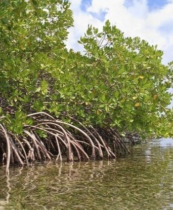
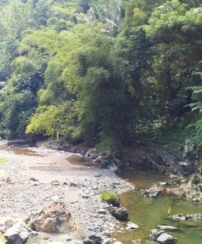

Kenali ekosistem rawa, gambut, dan hutan mangrove melalui petualangan edukatif STEM. Pelajari bagaimana sains dan teknologi mampu menjaga kelestarian air dan bumi kita bersama!
Makhluk hidup: tumbuhan, hewan, jamur, dan manusia
Abiotik
Air, tanah, udara, cahaya, suhu, dan mineral
Energi
Berpindah melalui rantai dan jaring-jaring makanan
Air
Berputar melalui penguapan, hujan, resapan, dan aliran
🔬 Pendekatan Pembelajaran Berkelanjutan
Integrasi 4 Pilar STEM di Lahan Basah
Belajar ekosistem dapat dilakukan melalui pengamatan, penggunaan alat sederhana, pembuatan model, dan pengolahan data.
🔬
Science (Sains)
Mengamati komponen biotik-abiotik, rantai makanan, keseimbangan ekosistem, dan siklus air.
💻
Technology (Teknologi)
Menggunakan kamera, peta digital, atau aplikasi sederhana untuk mencatat dan menyajikan hasil pengamatan.
⚙️
Engineering (Teknik)
Membuat model jaring makanan, daerah resapan air, atau solusi sederhana untuk masalah lingkungan sekitar.
📐
Mathematics (Matematika)
Menghitung jumlah organisme, membandingkan perubahan populasi, dan menyajikan data dalam tabel atau diagram.
📖 Pusat Pengetahuan STEM
Modul Pembelajaran Interaktif
Pelajari Harmoni dalam Ekosistem sesuai IPAS Kelas V melalui contoh lahan basah Kalimantan Selatan. Materi berfokus pada Bab 3, dengan siklus dan ketersediaan air dari Bab 4 sebagai penguat.
🌱
Mengenal Ekosistem Lahan Basah
Ekosistem adalah sistem hubungan antara makhluk hidup dan benda alam tak hidup di suatu tempat. Lahan basah seperti rawa, sungai, gambut, dan mangrove merupakan contoh ekosistem karena tumbuhan, hewan, air, tanah, udara, dan cahaya matahari saling memengaruhi.
🌿Biotik
Ikan, bangau, tumbuhan air, jamur, dan manusia
☀️Abiotik
Air, cahaya, udara, tanah, lumpur, dan mineral
🏞️Habitat
Tempat makhluk hidup tinggal dan memenuhi kebutuhannya
Tujuan Belajar:
Membedakan komponen biotik dan abiotik pada lahan basah.
Menjelaskan bahwa satu makhluk hidup disebut individu, kumpulan sejenis disebut populasi, dan berbagai populasi membentuk komunitas.
Menceritakan hubungan sederhana antara makhluk hidup dan habitatnya.
Foto: Panorama vegetasi rawa air tawar alami
🧩
Komponen Khas di Berbagai Habitat
Setiap habitat memiliki komponen khas. Geser kartu, lalu temukan contoh komponen biotik dan abiotik pada lahan basah Kalimantan Selatan.
Tawar & Payau
Rawa (Swamp & Marsh)
Biotik: purun, teratai, ikan, katak. Abiotik: air tawar, lumpur, cahaya, dan udara.
Kaya Karbon
Lahan Gambut (Peatland)
Biotik: pohon rawa, jamur, serangga. Abiotik: tanah organik lembap, air, dan mineral.

Pesisir Pantai
Hutan Mangrove (Bakau)
Biotik: bakau, kepiting, udang, burung. Abiotik: air payau, lumpur, garam, dan pasang surut.

Air Mengalir
Sungai & Danau Dangkal
Biotik: ikan, plankton, tumbuhan tepi sungai. Abiotik: air mengalir, batu, tanah, dan cahaya.
🔗
Interaksi Antarkomponen Ekosistem
Komponen biotik dan abiotik tidak berdiri sendiri. Tumbuhan memerlukan cahaya, air, udara, tanah, dan mineral untuk tumbuh. Hewan memerlukan air, udara, makanan, serta tempat berlindung. Perubahan satu komponen dapat memengaruhi komponen lainnya.
🌿 Biotik Bergantung pada Abiotik
Teratai: membutuhkan cahaya matahari, air, dan mineral untuk membuat makanan.
Ikan: membutuhkan air yang cukup bersih dan mengandung oksigen.
Bangau: membutuhkan perairan dangkal sebagai tempat mencari ikan dan katak.
Jamur dan bakteri: menguraikan sisa makhluk hidup menjadi unsur hara di tanah.
🔎 Aktivitas “Andaikan...”
Andaikan air tercemar: plankton dan ikan terganggu, lalu makanan bangau berkurang.
Andaikan tumbuhan air hilang: hewan pemakan tumbuhan kehilangan sumber energi.
Andaikan tanah mengering: tanaman rawa sulit tumbuh dan habitat banyak hewan berubah.
Coba amati: pilih satu komponen di sekitar sekolah, lalu sebutkan tiga komponen lain yang dipengaruhinya.
🕸️
Rantai Makanan di Lahan Basah
Rantai makanan menunjukkan proses makan dan dimakan serta perpindahan energi. Beberapa rantai makanan yang saling terhubung disebut jaring-jaring makanan. Arah panah bergerak dari sumber makanan menuju makhluk hidup yang memakannya.
CONTOH ALIRAN ENERGI DI RAWA
🌱
Produsen
Fitoplankton
➔
🦠
Konsumen I
Zooplankton
➔
🐟
Konsumen II
Ikan Seluang
➔
🐦
Predator Puncak
Burung Bangau
➔
🍄
Pengurai
Bakteri & Jamur
Rangkuman: Produsen membuat makanan dengan bantuan cahaya. Konsumen memperoleh energi dengan memakan makhluk hidup lain. Dekomposer menguraikan sisa makhluk hidup dan membantu mengembalikan unsur hara ke lingkungan.
💧
Siklus Air dan Lahan Basah
Materi Bab 4 ini menjadi penguat untuk memahami ekosistem. Air bergerak terus dari bumi ke atmosfer dan kembali lagi. Lahan basah menyimpan air, menjadi habitat makhluk hidup, dan membantu air meresap ke tanah.
☀️
1. Penguapan
Evaporasi terjadi saat air dipanaskan matahari. Transpirasi terjadi saat tumbuhan melepaskan uap air melalui daun.
☁️
2. Awan dan Hujan
Uap air mendingin menjadi titik air melalui kondensasi, lalu jatuh sebagai hujan melalui presipitasi.
💧
3. Resapan dan Aliran
Sebagian air hujan meresap melalui infiltrasi. Sisanya mengalir dari tempat tinggi ke rendah menuju sungai, danau, rawa, lalu laut.
⚖️
Keseimbangan Ekosistem Lahan Basah
Ekosistem seimbang ketika jumlah dan peran setiap komponennya terjaga. Jika satu populasi berkurang, bertambah berlebihan, atau habitatnya rusak, jaring-jaring makanan dapat ikut berubah.
⚠️ Contoh Ketidakseimbangan:
Jika ikan kecil berkurang, bangau dan ikan pemangsa kehilangan sumber makanan.
Jika pemangsa hilang, sebagian mangsa dapat bertambah terlalu banyak dan berebut makanan.
Jika air tercemar atau tanah mengering, tumbuhan dan hewan kehilangan kondisi habitat yang dibutuhkan.
✅ Tanda Ekosistem Seimbang:
Produsen, konsumen, dan dekomposer dapat menjalankan perannya.
Air, tanah, udara, dan cahaya tersedia dalam kondisi yang mendukung kehidupan.
Populasi berubah secara wajar tanpa ada komponen yang mendominasi atau menghilang mendadak.
⚠️
Gangguan terhadap Keseimbangan Ekosistem
Gangguan dapat berasal dari bencana alam atau perilaku manusia. Telusuri hubungan sebab-akibatnya: komponen apa yang rusak, makhluk hidup mana yang pertama terdampak, dan bagaimana pengaruhnya pada jaring-jaring makanan.
🏗️Alih Fungsi Lahan
Pengeringan rawa menghilangkan habitat dan mengurangi tempat hidup serta sumber makanan.
🔥Kebakaran Gambut
Api merusak tumbuhan, tempat berlindung, udara, dan tanah yang dibutuhkan banyak populasi.
🪓Penebangan Liar
Hilangnya pohon mengurangi tempat bersarang, sumber makanan, dan perlindungan tanah.
🚯Sampah Plastik
Plastik dapat menjerat atau termakan hewan serta menurunkan kualitas habitat perairan.
🛡️
Peran Manusia Menjaga Ekosistem
Manusia dapat merusak sekaligus menjaga keseimbangan ekosistem. Pilih tindakan yang aman, dapat dilakukan secara rutin, dan dampaknya bisa kamu amati.
Langkah Praktis Pelajar:
Kurangi Sampah: gunakan kembali barang yang masih layak dan buang sampah pada tempatnya.
Jaga Air: hemat penggunaan air dan jangan menuangkan minyak, cat, atau bahan kimia ke saluran air.
Amati Lingkungan: catat komponen biotik-abiotik serta perilaku manusia yang memengaruhinya.
Buat Komitmen: pilih dua kebiasaan baik selama satu bulan dan pantau hasilnya bersama guru atau keluarga.
Berkegiatan Aman: kunjungan atau aksi di sungai dan rawa harus didampingi orang dewasa.
🚀 Siap Menguji Pemahamanmu?
Setelah membaca modul di atas, saatnya tantang dirimu dalam Kuis 3 Tingkat atau coba langsung laboratorium simulasi kami!